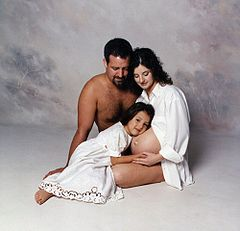

En la reproducción sexual la información genética de los descendientes está conformada por el aporte genético de ambos progenitores mediante la fusión de las células sexuales o gametos; es decir, la reproducción sexual es fuente de variabilidad genética.
La reproducción sexual requiere la interacción de un cromosoma, genera tanto gametos masculinos como femeninos o dos individuos, siendo de sexos diferentes, o también hermafroditas. Los descendientes producidos como resultado de este proceso biológico, serán fruto de la combinación del ADN de ambos progenitores y, por tanto, serán genéticamente distintos a ellos. Esta forma de reproducción es la más frecuente en los organismos complejos. En este tipo de reproducción participan dos células haploides originadas por meiosis, los gametos, que se unirán durante la fecundación.
-regresar.
|